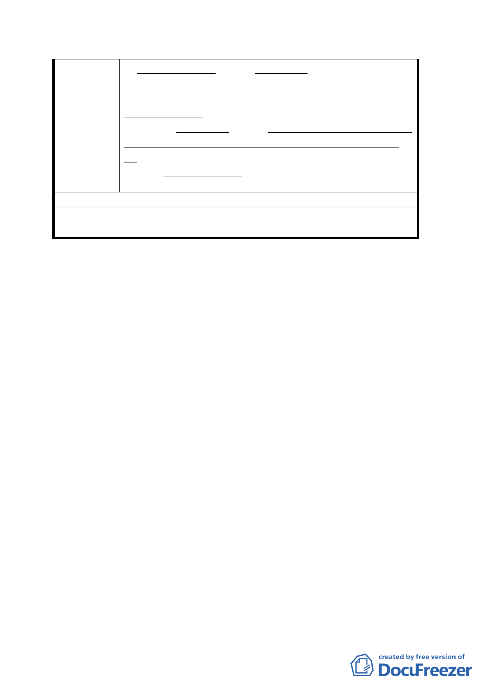

之廣場用地計画、少了貴陽基地一小片、當不致有
甚大影響。
茲懇請 貴委員恵予体恤貴陽街側建物、半世紀来
居住所有権人之不幸遭遇及困境、將貴陽街側建物
基地、即貴陽基地、自“變更台北市萬華區中華路
理教公所附近第四種商業區變更為廣場用地計畫
案” 免除、俾其不致變成都市計畫法第四十二條規
定之“公共設施用地”而能順利向國有財産局、申
購建物基地、兼可照顧人民之生計権益、至為感荷。
建 議 辦 法 同陳情理由。
委員會決
議
同決議一、二。
討論事項二
案名：變更臺北市捷運松山線 G22 車站第三種商業區土地為交
通用地計畫案
說明：
一、本件係市府以九十二年十二月二十六日府都二字第０九二
二八二三八００三號函送到會，並自九十二年十二月二十
七日起公開展覽三十天。
二、法令依據：都市計畫法第二十七條第一項第四款。
三、變更位置：詳計畫圖所示。
四、變更理由及內容：詳計畫書。
五、公民或團體所提意見：詳綜理表。
六、九十三年三月十日第五二五次委員會議決議：
本案由吳委員光庭、張委員章得、林委員志盈、康委員道
春等組成專案小組，請吳委員光庭擔任召集人儘速召集會
議，就本案用地及區位選取之適切性進行深入檢討後再行
提會討論。另請本會幕僚人員徵詢未到場委員參加本專案
小組意願。
三二